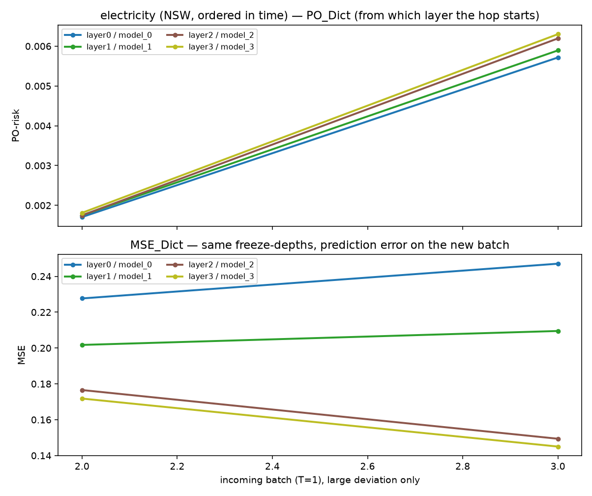
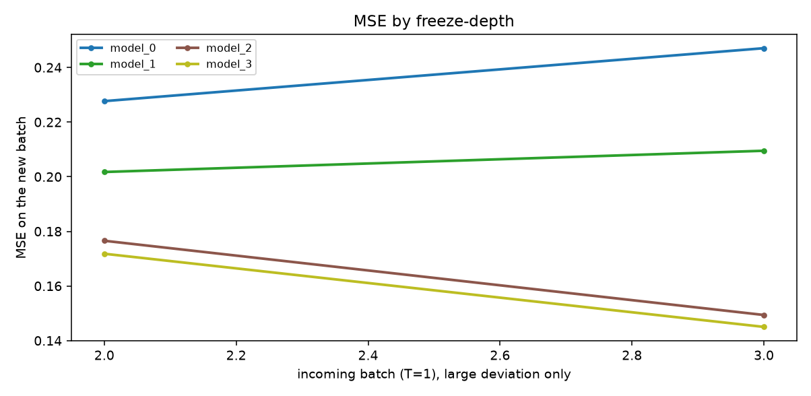

electricity (NSW, ordered in time). n_ref=10000, n_new=5000, hidden=[64, 32].
表格 PO-risk 单独维护 outcome model μ(Y|X) 和 propensity e(T|X)。
新 batch 是 T=1。raw PO-risk 会抖就做 causal moving average；
MA 稳（不过 2× baseline）→ 全量每一层 back-propagate。
大 hop 上同时记 PO_Dict / MSE_Dict
（layer0…layer_k），从哪一层开始明显变动就对着 MSE 读。
不做 online-bootstrap。何时 update 是业务逻辑，不是这个数。
有大 deviation 的段：从 model_0 开始冻（median）




| t | PO-risk | MA | baseline | large? | action |
|---|---|---|---|---|---|
| 0 | 9.59e-05 | 9.59e-05 | 0.0005145 | all trainable | |
| 1 | 0.0009639 | 0.0005299 | 0.0005145 | all trainable | |
| 2 | 0.001658 | 0.0009058 | 0.0005145 | yes | freeze from model_0 |
| 3 | 0.005966 | 0.002171 | 0.0005145 | yes | freeze from model_0 |
| 4 | 0.0009047 | 0.001918 | 0.0005145 | all trainable | |
| 5 | 9.407e-06 | 0.0019 | 0.0005145 | all trainable | |
| 6 | 6.078e-05 | 0.00172 | 0.0005145 | all trainable |
| layer | model | PO-risk | MSE |
|---|---|---|---|
| layer0 | model_0 ★ | 0.005716 | 0.2471 |
| layer1 | model_1 | 0.005893 | 0.2095 |
| layer2 | model_2 | 0.006195 | 0.1494 |
| layer3 | model_3 | 0.006302 | 0.145 |